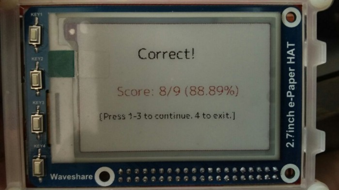
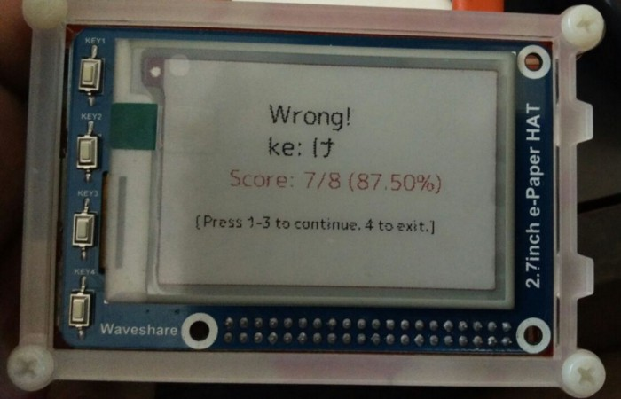

Learn the Kana Using Python and a Raspberry Pi¶
I have been attempting to learn Nihongo. It is a failing attempt really, since I have so little time lately.
However, I wanted to make myself flash cards or a simple test for the Hiragana.
Around that time, I bought a WaveShare e-Paper hat for the Raspberry Pi, and was having fun developing interfaces for it.
One of the uses that I figured I could put the Pi to was a test. A simple Hiragana quiz.

A simple interface for a multiple choice question? I liked the responsiveness to say the least!
The WaveShare e-paper screen has three colors: White, Black and Red. This tricolor variant is a little slow, compared to the Kindle for example. However it works quite well.
It is controlled using images, so you can display anything you can represent as an image.
That’s sort of easier said than done, though. If not for the Python-Pillow library, I wouldn’t know where to begin.
The first step, was a simple Python function to get a dictionary of hiragana characters against their roman equivalents.
This was a lot easier than hard coding the dictionary into the program.
The next steps were randomly selecting a kana character and displaying it on screen with a possible question. I had to also randomize the answer’s position.
Again, fairly simple, granted what I wanted to achieve.
The test_romaji_hiragana function took care of the interactions with the Raspberry Pi’s GPIO library. The function also handled the actual displaying of the question on the screen.
The epd library is WaveShare’s own library for the e-paper display. It has some Python 2.7 dependencies, which I need to weed out in the future. I’m skeptical of WaveShare’s software support, since their documentation leaves much for the user to discover on their own. However, their hardware is quite fun to use!
Python-PIL, as always, is fun to use. The epd library takes two Image objects: one for the blacks, and another for the reds. Needless to say, the rest of the space with a 100% transparency, is the white region.

Getting things right has a certain feeling to it.
The rest of the code is available at my personal library for this project. I’ve named it Tomodachi, Japanese for friend. It has some kinks, I’ll admit, but it was quite fun to work on. I will be going back to this project to tinker with it some more, perhaps for the PiFaceCAD module next, or the WaveShare Game Hat.

There is joy in going wrong also. You learn something new.
One of the things I want to make is a mario-styled sidescroller game to teach me the Kana. Perhaps I’ll use the GameHat for that. It would be a great project.
Resources¶
WaveShare e-Paper Display Library: 7zip file | Third-Party Github Link